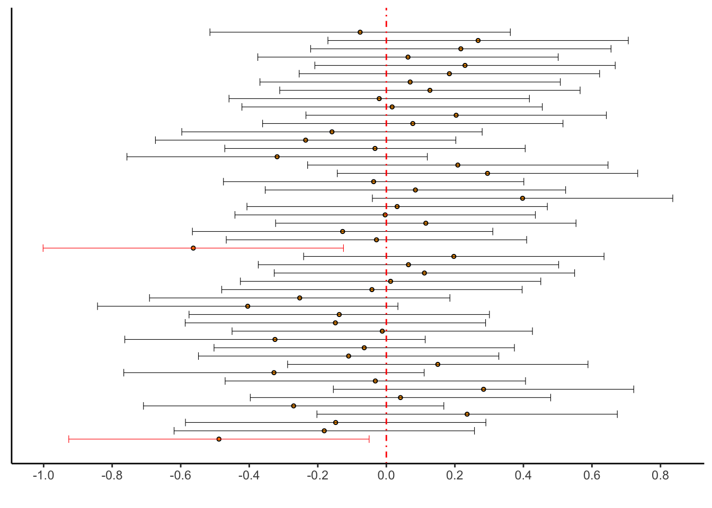

Chapter 9 Confidence Intervals and Quantifying Uncertainty
This chapter introduces confidence intervals and uses them to quantify uncertainty in estimates of parameters in statistical models.
All datasets from MIPS can be downloaded here: https://www.tudelft.nl/en/eemcs/the-faculty/departments/applied-mathematics/applied-probability/education/mips/.
9.1 Confidence Intervals for the Mean (Chapter 23)
Consider the following familiar scenario: we have a sample \(X_{1},\ldots,X_{n}\overset{iid}{\sim}\text{N}(\mu,1)\), and we estimate the unknown parameter \(\mu\) using the estimator \(\hat{\mu} = \bar{X}\). The sample is random, so the estimator is also random. If we took another sample, we would get another value of \(\hat{\mu}\). The estimator \(\hat{\mu}\) is a random variable, so it has a probability distribution. We have seen several ways to get it: mathematical derivation, the Central Limit Theorem, and Bootstrapping. In this example, we know that \[\hat{\mu} \sim \text{N}(\mu,1/\sqrt{n}).\]
The value \(\hat{\mu}\) is called a point estimate of the parameter \(\mu\). In this chapter we are going to go one step further and quantify uncertainty in our point estimates for parameters. We are going to do this by using the sampling distributions of the estimators to construct random intervals which contain the true parameter value with high probability. These are called confidence intervals.
9.1.1 Simulation: an example
How do we do this? We know that \[\hat{\mu} \sim \text{N}(\mu,1/\sqrt{n}).\] Rearrangement gives \[Z_{n} = \frac{\hat{\mu} - \mu}{1/\sqrt{n}} \overset \text{N}(0,1).\]
Let \(q_{\alpha}\) be the \(\alpha\)-quantile of \(Z_{n}\): the value such that \(P(Z_{n} \leq q_{\alpha}) = \alpha\), for \(0 \leq \alpha \leq 1\). Then we have \[\begin{equation}\begin{aligned} 1 - \alpha &= P\left( q_{\alpha/2} \leq Z_{n} \leq q_{1 - \alpha/2}\right) \\ &= P\left( \hat{\mu} - q_{1 - \alpha/2}\times\frac{1}{\sqrt{n}} \leq \mu \leq \hat{\mu} + q_{1 - \alpha/2}\times\frac{1}{\sqrt{n}}\right) \end{aligned}\end{equation}\] where we used \(q_{1 - \alpha/2} = -q_{\alpha/2}\). The values \[\begin{equation}\begin{aligned} L_{n} &= \hat{\mu} - q_{1 - \alpha/2}\times\frac{1}{\sqrt{n}} \\ U_{n} &= \hat{\mu} + q_{1 - \alpha/2}\times\frac{1}{\sqrt{n}} \\ \end{aligned}\end{equation}\] are random variables. We just showed that \(P(L_{n} \leq \mu \leq U_{n}) = 1-\alpha\). We call the random interval \((L_{n},U_{n})\) a \(1-\alpha\) confidence interval for \(\mu\).
The interpretation of \((L_{n},U_{n})\) sometimes gets confused. \(\mu\) is not random: it is a fixed, unknown quantity. \((L_{n},U_{n})\) are random: they change with the sample. If you took a different sample, you would get a different interval \((L_{n},U_{n})\). If you took many samples, about \((1-\alpha)\times 100\%\) of them would contain the fixed, unknown value \(\mu\).
Let’s use a simulation to illustrate this concept. Take \(\mu = 0\). We’ll generate a bunch of samples from a \(\text{N}(0,1)\) distribution, compute their confidence intervals \((L_{n},U_{n})\), and plot them. We’ll use \(\alpha = 0.05\) so that about \(95\%\) of the calculated intervals should contain the value \(0\).
set.seed(4329432)
# How many samples to generate
B <- 50
# Sample size of each
n <- 20
# Confidence level
alpha <- .05
# Quantile
critval <- qnorm(1 - alpha/2) # For alpha = .05 this equals 1.96
# Perform the simulation
theintervals <- list(
lower = numeric(B),
upper = numeric(B)
)
for (b in 1:B) {
# Generate a sample
xx <- rnorm(n,0,1)
# Compute the confidence interval
Ln <- mean(xx) - critval * (1/sqrt(n))
Un <- mean(xx) + critval * (1/sqrt(n))
theintervals$lower[[b]] <- Ln
theintervals$upper[[b]] <- Un
}
# Compute the proportion that don't contain zero
# Should be close to alpha
mean(theintervals$upper < 0 | theintervals$lower > 0)[1] 0.04# Plot them. This is a more complicated plot than you're used to.
# Run this code layer by layer to understand what each part does.
as_tibble(theintervals) %>%
mutate(id = 1:n(),
has_zero = if_else(lower > 0 | upper < 0,"no","yes")) %>%
ggplot(aes(x = id)) +
theme_classic() +
geom_point(aes(y = (upper + lower)/2),pch = 21,colour = "black",fill = "orange",size = 1) +
geom_errorbar(aes(ymin = lower,ymax = upper,colour = has_zero),size = .2) +
geom_hline(yintercept = 0,colour = "red",linetype = "dotdash") +
scale_y_continuous(breaks = seq(-1,1,by=.2)) +
scale_color_manual(values = c("no" = "red","yes" = "black")) +
coord_flip() +
theme(axis.title.y = element_blank(),axis.text.y = element_blank(),axis.ticks.y = element_blank()) +
guides(colour = FALSE) +
labs(y = "")
Exercise: re-run this experiment several times with different random seeds. What
kind of empirical coverage probabilities—the proportion of intervals that don’t contain zero—do you
get? What about if you raise the sample size to n = 100? What about if you raise the
number of simulations to B = 1000 (do NOT make the plot if you raise B this high!)?
Exercise: suppose instead of \(\text{N}(\mu,1)\), the data are distributed as \(\text{N}(\mu,\sigma)\) where \(\sigma\) is a known constant. Show that a \(1-\alpha\) confidence interval for \(\mu\) is \[ \left(\hat{\mu} - q_{1 - \alpha/2}\times\frac{\sigma}{\sqrt{n}},\hat{\mu} + q_{1 - \alpha/2}\times\frac{\sigma}{\sqrt{n}}\right) \]
9.1.2 Gross calorific value measurements for Osterfeld 262DE27
The Osterfield data is made available with MIPS. It contains measurements of the gross calorific content of a type of coal. Its file name is misspelled, so be careful:
23.870
23.730
23.712
23.760
23.640
23.850
23.840
23.860
23.940
23.830
23 data/MIPSdata/grosscalOsterfeld.txtRead it in. I’m leaving this as an exericse (note: not because I’m lazy, I still had to write the code. It’s for your learning). You should get the following:
Observations: 23
Variables: 1
$ calorific_value <dbl> 23.870, 23.730, 23.712, 23.760, 23.640, 23.850, 23.840, 23.860, 23.940, 23.830, 23.877, 23.700, 23.796, 23.7…Suppose that the measurements are normally distributed with known \(\sigma = .1\). Then we can compute a \(95\%\) confidence interval.
Exercise: if we want a \(95\%\) or \(0.95\) confidence interval, what is \(\alpha\)? What is \(q_{1 - \alpha/2}\)?
# Compute the sample mean and size
xbar <- mean(osterfield$calorific_value)
n <- nrow(osterfield)
# The population standard deviation, and the critical value/confidence level
# are given as:
sigma <- .1
conf <- .05
# Make sure to UNDERSTAND this calculation:
critval <- qnorm(1 - alpha/2) # 1.96
# Compute the interval
c(
"lower" = xbar - critval * sigma/sqrt(n),
"upper" = xbar + critval * sigma/sqrt(n)
) lower upper
23.747 23.829 We are \(95\%\) confident that \(\mu\) lies between \(23.747\) and \(23.829\). This means that if we were to repeat this experiment over and over, obtaining each time a new sample and hence a new confidence interval, that about \(95\%\) of those intervals ought to contain the true value of \(\mu\), whatever it is.
9.1.3 When you don’t know \(\sigma\)
Now, suppose we have a normal sample but we don’t know \(\sigma\). If we don’t know \(\sigma\) we might think to estimate it using the sample standard deviation \[ \hat{\sigma} = s_{n} = \sqrt{ \frac{1}{n}\sum_{i=1}^{n}\left(x_{i} - \bar{x}\right)^2} \] and then plug in \(s_{n}\) instead of \(\sigma\) in the formula for a confidence interval.
It turns out this is basically what we do, but with a catch. We now don’t only have uncertainty in \(\mu\): we also have uncertainty in \(\sigma\). Plugging in \(s_{n}\) and treating it as the truth ignores this uncertainty and leads to a confidence interval for \(\mu\) that is too wide. This means that it will contain the true \(\mu\) less than \((1 - \alpha)\times 100\%\) of the time.
Let’s see this using simulation:
set.seed(7894236)
n <- 5 # Use a small sample to make this really obvious
compute_ci_fixedsd <- function(samp) {
xbar <- mean(samp)
n <- length(samp)
critval <- qnorm(1 - .05/2,0,1)
c(
"lower" = xbar - critval * 1/sqrt(n),
"upper" = xbar + critval * 1/sqrt(n)
)
}
compute_ci_samplesd <- function(samp) {
xbar <- mean(samp)
sn <- sd(samp)
n <- length(samp)
critval <- qnorm(1 - .05/2,0,1)
c(
"lower" = xbar - critval * sn/sqrt(n),
"upper" = xbar + critval * sn/sqrt(n)
)
}
# True mu = 0, true sigma = 1
B <- 1000
doesthefixedonecontainmu <- numeric(B)
doesthesampleonecontainmu <- numeric(B)
for (b in 1:B) {
# Take a sample
thesamp <- rnorm(n,0,1)
# Compute the intervals
fixedsigmainterval <- compute_ci_fixedsd(thesamp)
samplesigmainterval <- compute_ci_samplesd(thesamp)
# Record whether they each contain zero
doesthefixedonecontainmu[b] <- as.numeric(fixedsigmainterval['lower'] < 0 & fixedsigmainterval['upper'] > 0)
doesthesampleonecontainmu[b] <- as.numeric(samplesigmainterval['lower'] < 0 & samplesigmainterval['upper'] > 0)
}
# Proportion of each type of interval that contains mu
mean(doesthefixedonecontainmu)[1] 0.961[1] 0.876The proportion of known-\(\sigma\) intervals containing the true \(\mu\) is close to the “nominal” value of \(0.95\). The proportion of the estimated-\(\sigma\) intervals containing the true \(\mu\) is less, because these intervals are too narrow, because they ignore uncertainty in \(\sigma\).
To mitigate this, we widen the interval. We do so in a specific way. It turns out
that
\[
t_{n} = \frac{\bar{X} - \mu}{s_{n}/\sqrt{n}}\sim T_{n-1}
\]
where the random variable \(T_{n-1}\) has what is called the \(t\)-distribution with
\(n-1\) degrees of freedom. For now, all you need to know is that you can obtain
\(q_{n-1,\alpha}\) satisfying \(P(T_{n-1} \leq q_{n-1,\alpha}) = \alpha\) using the command
qt(alpha,n-1) in R.
The formula for a \(1-\alpha\) confidence interval when the standard deviation is unknown is \[ \left(\hat{\mu} - q_{n-1,1 - \alpha/2}\times\frac{s_{n}}{\sqrt{n}},\hat{\mu} + q_{n-1,1 - \alpha/2}\times\frac{s_{n}}{\sqrt{n}}\right) \] Basically, when you swap \(\sigma\) for \(s_{n}\), you swap \(q_{\alpha}\) for \(q_{n-1,\alpha}\).
We can check this fixes the problem using simulation:
set.seed(7894236) # Same seed as before
n <- 5 # Use a small sample to make this really obvious
compute_ci_samplesd_T <- function(samp) {
xbar <- mean(samp)
sn <- sd(samp)
n <- length(samp)
critval <- qt(1 - .05/2,n-1)
c(
"lower" = xbar - critval * sn/sqrt(n),
"upper" = xbar + critval * sn/sqrt(n)
)
}
# True mu = 0, true sigma = 1
B <- 1000
doesthenewsampleonecontainmu <- numeric(B)
doestheoldbadonecontainmu <- numeric(B)
for (b in 1:B) {
# Take a sample
thesamp <- rnorm(n,0,1)
# Compute the interval
samplesigmainterval_oldandbad <- compute_ci_samplesd(thesamp)
samplesigmainterval_T <- compute_ci_samplesd_T(thesamp)
# Record whether they each contain zero
doestheoldbadonecontainmu[b] <- as.numeric(samplesigmainterval_oldandbad['lower'] < 0 & samplesigmainterval_oldandbad['upper'] > 0)
doesthenewsampleonecontainmu[b] <- as.numeric(samplesigmainterval_T['lower'] < 0 & samplesigmainterval_T['upper'] > 0)
}
# Proportion of intervals that contains mu
mean(doestheoldbadonecontainmu)[1] 0.876[1] 0.949The proportion of \(t\)-intervals containing the true \(\mu\) is now much closer to the nominal coverage of \(.95\).
9.1.4 Gross calorific value measurements for Daw Mill 258GB41
Now, for a different sample of measurements of the gross calorific content of some other type of coal, we can compute a confidence interval without assuming that the standard deviation is known.
Read the data in from file grosscalDawMill.txt, call it
dawmill. You can compute the sample standard deviation and appropriate
critical value as follows:
You should get:
lower upper
0.6478 61.3754 9.1.5 Bootstrap Confidence Intervals
The construction of the confidence interval assumes we know the distribution of \[ Z_{n} = \frac{\bar{X} - \mu}{\sigma/\sqrt{n}} \] or \[ T_{n} = \frac{\bar{X} - \mu}{s_{n}/\sqrt{n}} \] The CLT is very helpful, but it doesn’t always apply, and sometimes we won’t know the sampling distribution of \(T_{n}\). We can use the empirical bootstrap to construct confidence intervals too.
The only thing that the distribution of \(T_{n}\) is actually used for is finding the quantiles: the \(q_{\alpha}\) with \(P(T_{n} \leq q_{\alpha}) = \alpha\). Consider the following algorithm:
Input: sample \(X_{1},\ldots,X_{n}\),
For: \(b = 1,\ldots,B\), do:
Take a bootstrap sample \(X^{*}_{1},\ldots,X^{*}_{n}\) independently from the original sample, and compute its mean \(\bar{X}^{*}\) and standard deviation \(s_{n}^{*}\),
Compute \(T^{*}_{n,b} = (\bar{X}^{*} - \bar{X}) / (s_{n}^{*}/\sqrt{n})\),
Output: \(T^{*}_{n,1},\ldots,T^{*}_{n,B}\), a sample from the sampling distribution of \(T_{n}\).
The sample quantiles of \(T^{*}_{n,1},\ldots,T^{*}_{n,B}\) are then used in place of the theoretical quantiles we used before.
First, let’s simulate a dataset to illustrate this idea and so we can compare the bootstrap and analytical answers.
set.seed(43547803)
B <- 2000
n <- 5000
# Simulate one dataset
ds <- rnorm(n,0,1)
# Values
alpha <- .05
critval <- qnorm(1 - alpha/2)
# Now resample from it and calculate studentized statistics
resampledTn <- numeric(B)
for (b in 1:B) {
# Draw a bootstrap sample from the dataset ds
boot <- sample(ds,n,replace = TRUE)
# Compute Tn
resampledTn[b] <- (mean(boot) - mean(ds)) / (sd(boot) / sqrt(n))
}
# The confidence limits are obtained from the sample quantiles:
samplequantiles <- quantile(resampledTn,probs = c(alpha/2,1 - alpha/2))
truequantiles <- qnorm(c(alpha/2,1-alpha/2),0,1)
# Here's a plot that illustrates what these look like:
tibble(x = resampledTn) %>%
ggplot(aes(x = x)) +
theme_classic() +
geom_histogram(aes(y = ..density..),colour = "black",fill = "lightgrey",bins = 100) +
geom_vline(xintercept = samplequantiles[1],colour = "orange",linetype = "dotdash") +
geom_vline(xintercept = samplequantiles[2],colour = "orange",linetype = "dotdash") +
geom_vline(xintercept = truequantiles[1],colour = "blue",linetype = "dotdash") +
geom_vline(xintercept = truequantiles[2],colour = "blue",linetype = "dotdash") +
labs(title = "Resampled student statistics with true (blue) and empirical (orange) confidence limits",
x = "",y = "")
Exercise: I deliberately chose a large sample size and number of bootstrap samples to make the results look good. I encourage you to change these numbers to try and break this simulation.
The bootstrap-resampled confidence limits are close to the truth:
2.5% 97.5%
-1.9999 2.0060 [1] -1.96 1.96Let’s apply this to the software data from a previous chapter. Recall we had measurements \(X_{i}\) of the time to failure of a software product, and we had a model \(X_{i}\overset{iid}{\sim}\text{Exponential}(\lambda)\).
We can use the empirical bootstrap to compute a \(95\%\) confidence interval for \(E(X_{i}) = \lambda^{-1}\):
# Read it in:
software <- readr::read_csv(
file = "data/MIPSdata/software.txt",
col_names = "time",
col_types = "n"
)
alpha <- .05
n <- nrow(software)
mn <- mean(software$time)
sn <- sd(software$time)
# 95% CI for mu based on the empirical bootstrap:
B <- 1000
set.seed(821940379)
resampledTn <- numeric(B)
for (b in 1:B) {
# Draw a bootstrap sample from the dataset ds
boot <- sample(software$time,n,replace = TRUE)
# Compute Tn
resampledTn[b] <- (mean(boot) - mean(software$time)) / (sd(boot) / sqrt(n))
}
# The confidence limits are obtained from the sample quantiles:
conflim <- quantile(resampledTn,probs = c(alpha/2,1 - alpha/2))
# The confidence interval:
c(
"lower" = mn + conflim[1] * sn/sqrt(n),
"upper" = mn + conflim[2] * sn/sqrt(n)
) lower.2.5% upper.97.5%
436.40 807.14 Exercise: compute a \(95\%\) confidence interval for the mean for the software data by using the CLT to . This does NOT mean that you should use a normal distribution for calculating the critical values– if you don’t understand why, go back and read the “Variance Unknown” section on page 348. I got the following:
lower upper
473.45 824.83 Does this lead to different conclusions in practice than the bootstrap interval?
Exercise: what if we wanted a confidence interval for \(\lambda\), instead of \(\lambda^{-1}\)? Show in general that if \((L_{n},U_{n})\) is a \(1-\alpha\) confidence interval for some parameter \(\theta\), that \((U_{n}^{-1},L_{n}^{-1})\) is a \(1-\alpha\) confidence interval for \(\theta^{-1}\). Use this fact to construct a \(1-\alpha\) confidence interval for \(\lambda\) using both the empirical bootstrap and the \(t\)-distribution. I got:
upper lower
0.0012124 0.0021122 upper.97.5% lower.2.5%
0.0015348 0.0015482 Advanced Exercise: extend that last result: show that if \((L_{n},U_{n})\) is a \(1-\alpha\) confidence interval for some parameter \(\theta\), and \(g(\theta)\) is a monotone function, then
\((g(L_{n}),g(U_{n}))\) is a \(1-\alpha\) confidence interval for \(g(\theta)\) if \(g(\theta)\) is increasing and
\((g(U_{n}),g(L_{n}))\) is a \(1-\alpha\) confidence interval for \(g(\theta)\) if \(g(\theta)\) is decreasing.